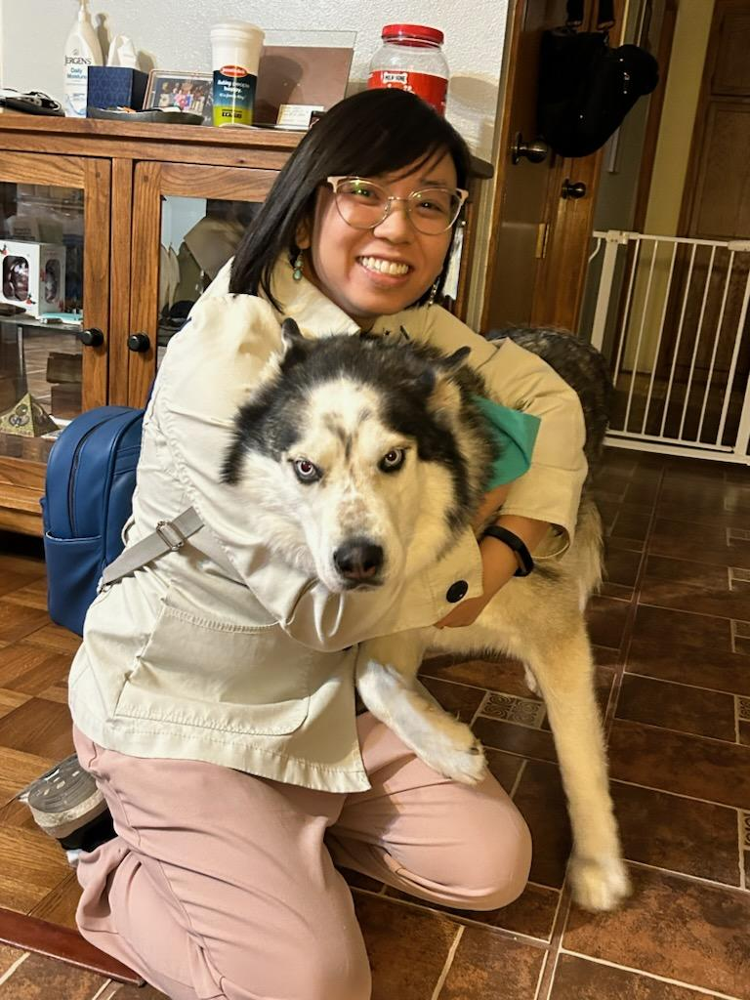

About Me
I am currently a graduate student at New Mexico State University
pursuing my Master's in Computer Science.
Last summer, I had the incredible opportunity to work for Sandia National Labs
as a TITANS summer intern (Technical Internships To Advance National Security).
I worked on database management and created a database pruning mechanism
that would automatically delete entries older than 30 days from a database.
My summer internship got extended into a year-round internship
and I am also currently in the process of obtaining my Q-Clearance.
I have also recently obtained certification as an AWS (Amazon Web Services) Cloud Practitioner.
Outside of computer science, I have a lot of hobbies.
The hobby that is currently taking up most of my time is dancing.
I currently take lessons at Sol Ballroom and know the basics of
salsa, bachata, foxtrot, tango, cha cha, waltz, east coast swing, and west coast swing.
Another thing I really enjoy is travelling. I've been to 14 different countries
and visited 28 states in the USA.